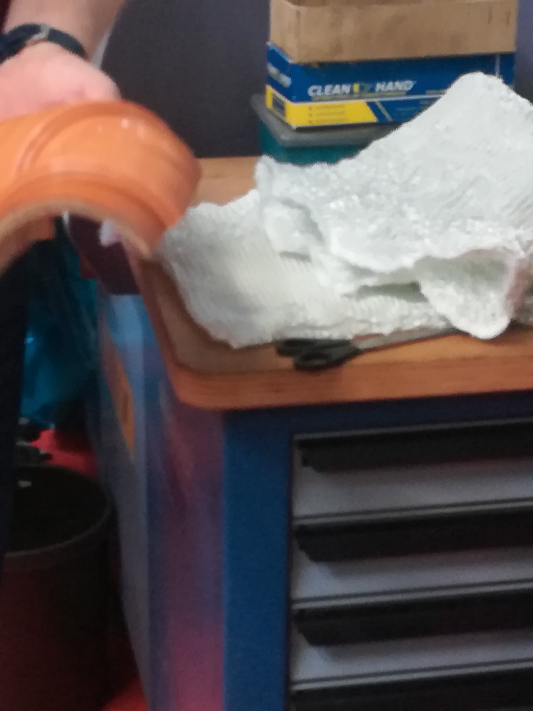
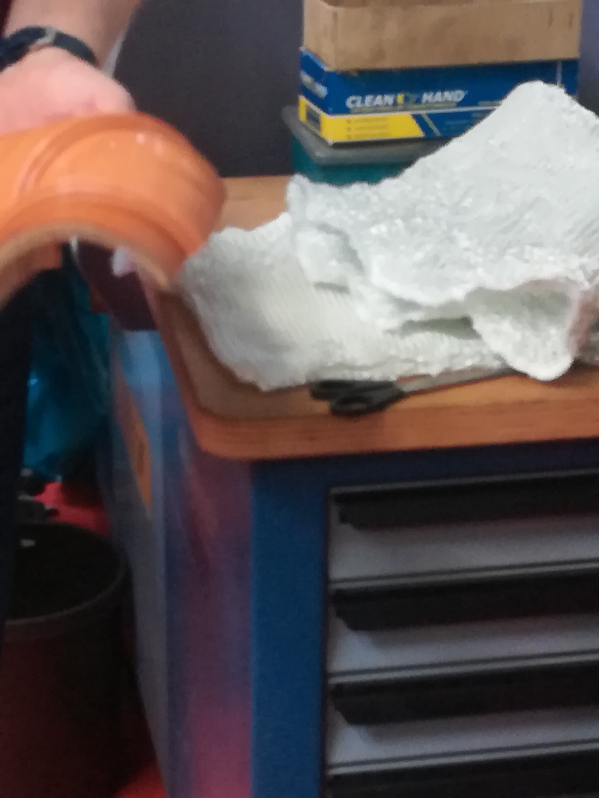

The factory we visited is founded by the owner Mr. Bache in Rheinberg in the year 2005.
This firm produces clothes made of different fabrics for adults, children as a mass production or special orders like for certain events such as stage plays or theathers. At the moment they are producing orders for the automotive industry and form time to time sewing fabrics for isolating pipes for reoarations. For these orders they use special fabrics to produce the material which is appropriate for reparations on pipes. Sewing such materials glas fibers are used, inserted into the machine and the desired form and size is adjusted before. There are also threads made of steemless stell, silver, carbon, stones, gold and aramid. Fitting all customer's needs.
The whole work is done by machines which are are configurated for several sewing and weeding techniques regarding what the customer reqiuires. According to the wishes form and look of the clothes such as for example wider or tidier meshes, ceratain sewing and weeding thechniques are adjusted on the machines. For example there exist flatneeting or circular systems. When multiple needles are used then tidier meshes are produced. The finest mashine which exists in this facrory is the one with 15 needles and a separate machine is responsible for sewing more open meshes. For any garmet which is produced there mashines need 60 to 70 minutes for one piece of clothes. Sometimes it is necessary to interrupt and to manually change threads for another kind of mesh for the particular piece of clothes. In some cases such as clothes for babies some seams are have to be completed manually in a separate room with smaller sewing machines. The clothes are washed and ironed after they are finished so they are proper condition for the customer.
 
